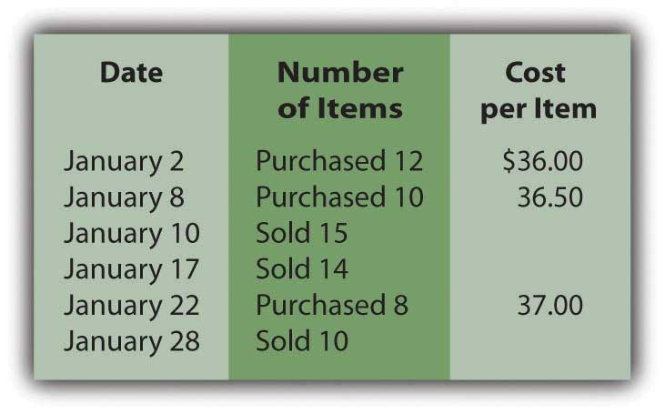
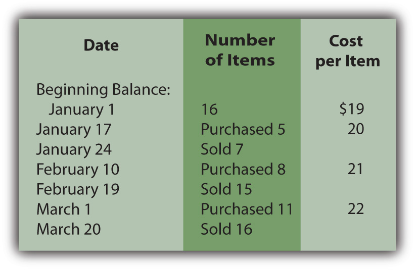
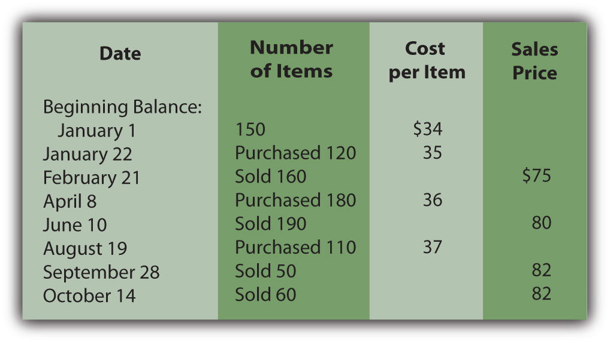
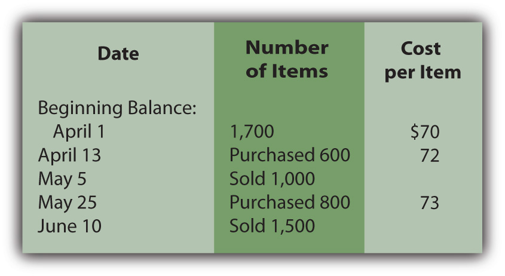
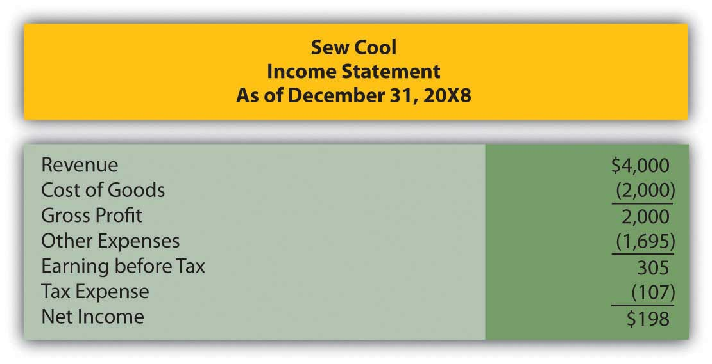
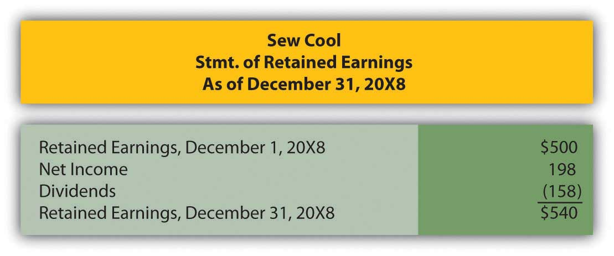
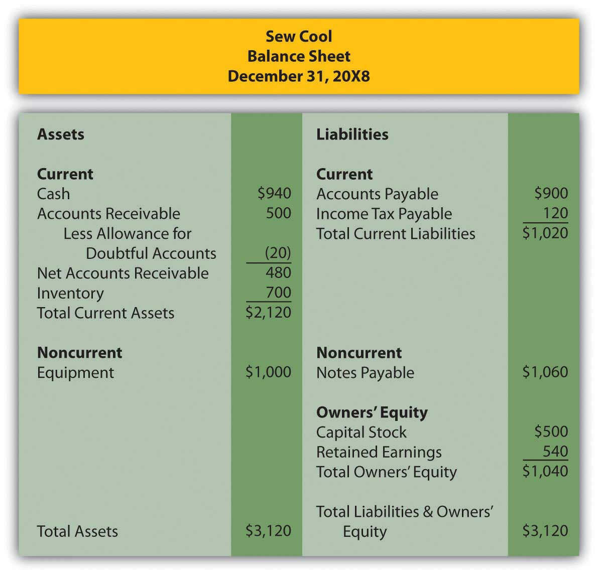
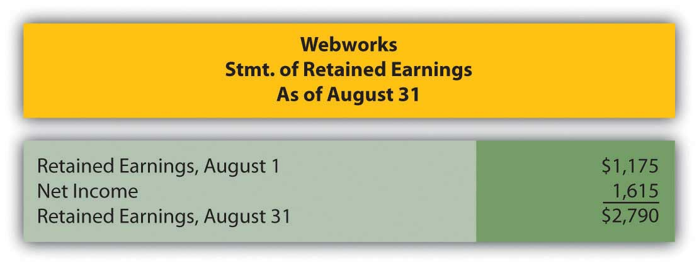
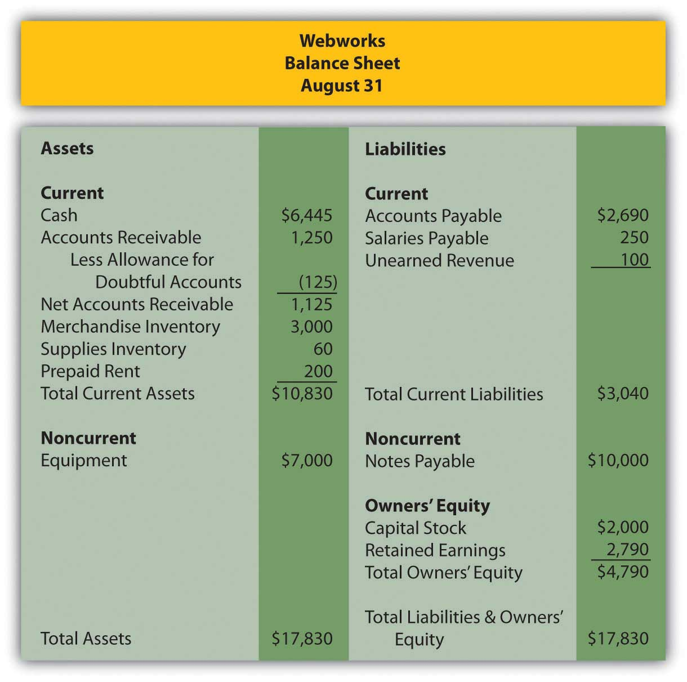

Which of the following provides the best matching of revenues and expenses?
Milby Corporation purchased three hats to sell during the year. The first, purchased in February, cost $5. The second, purchased in April, cost $6. The third, purchased in July, cost $8. If Milby sells two hats during the year and uses the FIFO method, what would cost of goods sold be for the year?
Which is not a reason a company would choose to use LIFO for financial reporting?
During the year, Hostel Company had net sales of $4,300,000 and cost of goods sold of $2,800,000. Beginning inventory was $230,000 and ending inventory was $390,000. Which of the following would be Hostel’s inventory turnover for the year?
Traylor Corporation began the year with three items in beginning inventory, each costing $4. During the year Traylor purchased five more items at a cost of $5 each and two more items at a cost of $6.50 each. Traylor sold eight items for $9 each. If Traylor uses LIFO, what would be Traylor’s gross profit for the year?
SuperDuper Company sells top-of-the-line skateboards. SuperDuper is concerned about maintaining high earnings and has chosen to use the periodic FIFO method of inventory costing. At the beginning of the year, SuperDuper had 5,000 skateboards in inventory, each costing $20. In April, SuperDuper purchased 2,000 skateboards at a cost of $22 and in August, purchased 4,000 more at a cost of $23. During the year, SuperDuper sold 9,000 skateboards for $40 each.
Using your answers to problems 1–3, determine the following:
Paula’s Parkas sells NorthPlace jackets. At the beginning of the year, Paula’s had twenty jackets in stock, each costing $35 and selling for $60. The following table details the purchases and sales made during January:
Figure 9.13
Assume that Paula’s Parkas uses the perpetual FIFO method.
Assume the same facts as in problem 6 above, but that Paula’s Parkas uses the perpetual LIFO method.
Assume the same facts as in problem 6 above, but that Paula’s Parkas uses the moving average method.
The Furn Store sells home furnishings, including bean bag chairs. Furn currently uses the periodic FIFO method of inventory costing, but is considering implementing a perpetual system. It will cost a good deal of money to start and maintain, so Furn would like to see the difference, if any, between the two and is using its bean bag chair inventory to do so. Here is the first quarter information for bean bag chairs:
Figure 9.14
Each bean bag chair sells for $40.
Rollrbladz Inc. is trying to decide between a periodic or perpetual LIFO system. Management would like to see the effect of each on cost of goods sold and ending inventory for the year. Below is information concerning purchases and sales of its specialty line of rollerblades:
Figure 9.15
Highlander Corporation sells swords for decorative purposes. It would like to know the difference in cost of goods sold and ending inventory if it uses the weighted average method or the moving average method. Please find below information to help determine these amounts for the second quarter.
Figure 9.16
Swords retail for $120 each.
In Chapter 4 "How Does an Organization Accumulate and Organize the Information Necessary to Prepare Financial Statements? " and Chapter 7 "In a Set of Financial Statements, What Information Is Conveyed about Receivables?", we met Heather Miller, who started her own business, Sew Cool. The financial statements for the first year of business are shown below. To make calculations easier, assume that the business began on 1/1/08 and that the balance in the inventory account on that date was -0-.
Figure 9.17
Figure 9.18
Figure 9.19
Based on the financial statements determine the following:
This problem will carry through several chapters, building in difficulty. It allows students to continuously practice skills and knowledge learned in previous chapters.
In Chapter 8 "How Does a Company Gather Information about Its Inventory?", you prepared Webworks statements for August. They are included here as a starting point for September.
Here are Webworks financial statements as of August 31.
Figure 9.20
Figure 9.21
The following events occur during September:
a. Webworks purchases supplies worth $120 on account.
b. At the beginning of September, Webworks had 19 keyboards costing $100 each and 110 flash drives costing $10 each. Webworks has decided to use periodic FIFO to cost its inventory.
c. On account, Webworks purchases thirty keyboards for $105 each and fifty flash drives for $11 each.
d. Webworks starts and completes five more Web sites and bills clients for $3,000.
e. Webworks pays Nancy $500 for her work during the first three weeks of September.
f. Webworks sells 40 keyboards for $6,000 and 120 flash drives for $2,400 cash.
g. Webworks collects $2,500 in accounts receivable.
h. Webworks pays off its salaries payable from August.
i. Webworks pays off $5,500 of its accounts payable.
j. Webworks pays off $5,000 of its outstanding note payable.
k. Webworks pays Leon salary of $2,000.
l. Webworks pays taxes of $795 in cash.
Required:
A. Prepare journal entries for the above events.
B. Post the journal entries to T-accounts.
C. Prepare an unadjusted trial balance for Webworks for September.
D. Prepare adjusting entries for the following and post them to your T-accounts.
m. Webworks owes Nancy $300 for her work during the last week of September.
n. Leon’s parents let him know that Webworks owes $275 toward the electricity bill. Webworks will pay them in October.
o. Webworks determines that it has $70 worth of supplies remaining at the end of September.
p. Prepaid rent should be adjusted for September’s portion.
q. Webworks is continuing to accrue bad debts so that the allowance for doubtful accounts is 10 percent of accounts receivable.
r. Record cost of goods sold.
E. Prepare an adjusted trial balance.
F. Prepare financial statements for September.